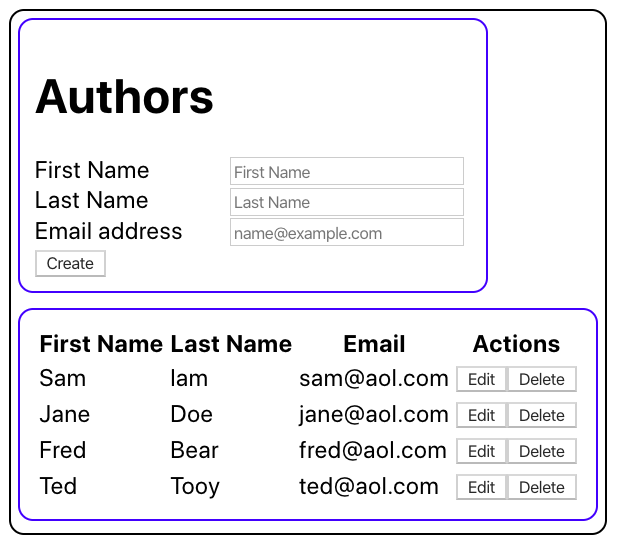

CIS 371 |
Bug Tracking in React |
Fall 2022 |
This assignment was originally designed my Prof. Engelsma
For this sequence of assignments, you will build a version of your bug tracking app using React.
- Please complete this sequence of assignments on your own.
- Please use this GithubClassroom URL:
https://classroom.github.com/a/b0C3yLw1
Part 1: A simple user view
Write a very simple React app that will display a list of users. Over the next few assignments, you will be building up a "full" app that uses State and and an API. For this first part, you can use the simplifications listed below (which will make this assignment similar to the recipe example in the "React 3" video); or, you can skip directly to the "real" way of doing things. (The tradeoff is between a simpler first step, and avoiding having to rewrite part of your app later.) Specifically, for this first step, you may:
- Place all your components into one file (as opposed to having a separate file for each component).
- Place all of your data in a single array (as opposed to loading it from a file or API call).
You must:
- Use JSX
- Use props
Part 2: A complete User view
Now complete the User view so all CRUD operations are working.
Add just enough styling so that the view doesn't look terrible. For example here, I just added some widths, and borders with rounded edges:
Part 3: Connect to API and Validate
Connect your User view to a real API of your choice (Express, Rails, Firebug, etc.). Also, add validation so that bad data doesn't get entered into the DB. Both the client and the server should validate the data.
Important: Don't allow duplicate email addresses.
Part 4: Add Bugs
Add a Bugs view.
Submission
Just commit your code with the message [grade me x] (where x is the current part number). Please include a screen shot of your app in your commit.
Updated Friday, 28 October 2022, 1:46 PM